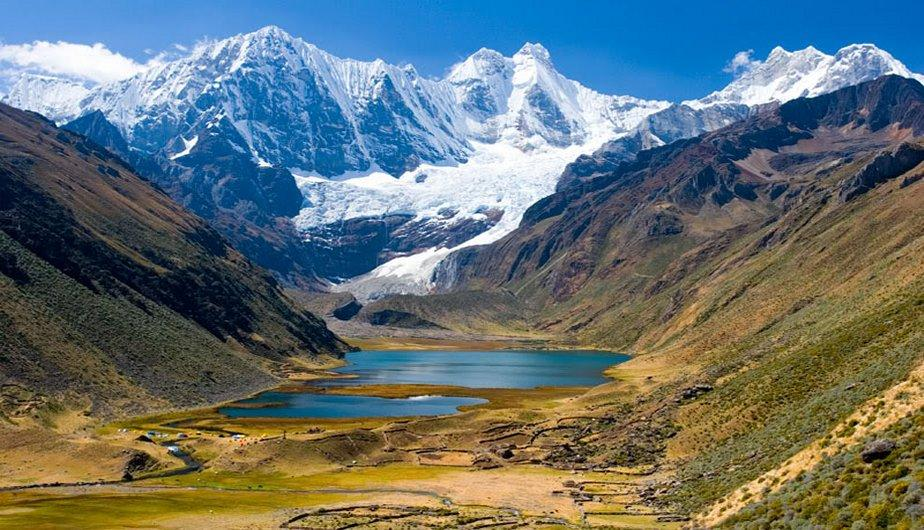
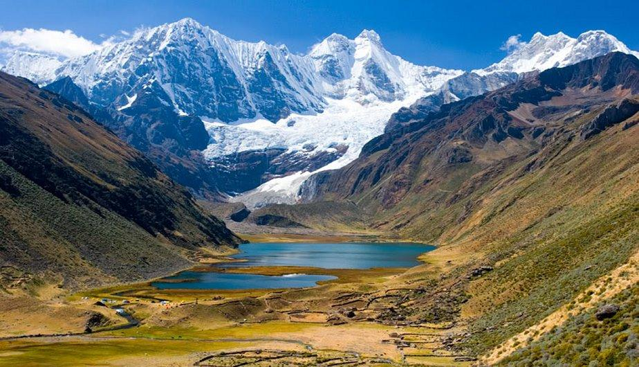

Tíclio
Ticlio o Abra Anticona, es un paso montañoso de los Andes peruanos, que se encuentra ubicado en el distrito de Chicla, en la provincia de Huarochirí, dentro del departamento de Lima. Por este paso atraviesa la ruta nacional PE-22, también conocida como Carretera central, la que alcanza allí —en el km 120— su punto de mayor altitud: 4818 msnm.
La Carretera Central es una de las mas importantes vias de comunicacion del Perú, pues la misma permite el intercambio comercial entre la ciudad de Lima y la sierra central.
Ticlio es el punto mas alto de la Carretera Central, el Abra Anticona esta a una altura de 4,818 m.s.n.m..
En esta página podremos apreciar, los paisajes naturales a mas de 4,000 m.s.n.m., son a la subida de Ticlio y a la bajada del mismo, pero del otro lado; como quien se va para Huancayo.
Los paisajes naturales son de lo mas sorprendentes; sorprendentes por la claridad del medio ambiente, por su cielo azul, por lo inmenso de la cardillera de los andes, por el contraste de los colores y la variedad de los mismos, por el aire frio y seco y por muchas otras cosas que solo estando en estos lugares se pueden apreciar. Asimismo; es sorprendente la cantidad de lagunas que se encuentran en esta ruta, las hay de diferentes tamaños y colores.